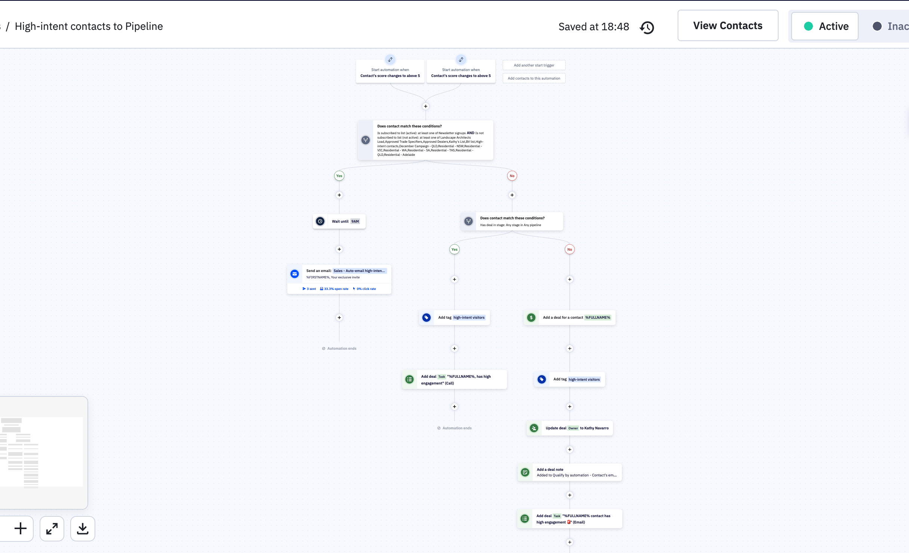

Back to Projects
Back to Projects
ActiveCampaign
Tracking Contacts with High-Engagement in CRM
Automated lead scoring system that identifies highly engaged contacts and automatically moves them into sales pipeline with personalized outreach.

Problem
- Highly engaged leads get lost in the CRM without sales follow-up
- Manual lead scoring is time-consuming and inconsistent
- Sales team doesn't know which contacts are ready to buy
- No automated process to prioritize hot leads for outreach
Solution
Built an intelligent lead scoring workflow in ActiveCampaign that automatically detects when a contact's engagement score rises above 4, validates they meet specific criteria (newsletter signup, campaign participation), and automatically creates sales deals with follow-up tasks. The system sends personalized emails at optimal times and updates deal stages throughout the pipeline.
Benefits
- Automated lead qualification - No manual lead scoring required
- Never miss hot leads - Instant pipeline creation for engaged contacts
- Optimized timing - Emails sent at 3AM for maximum open rates
- Complete tracking - Deal notes and tags for full visibility
- Saves ~10-15 hours per week on manual lead management
How It Works
- Trigger: Contact score changes to above 4 - Workflow activates when engagement score indicates high intent.
- Conditional checks - Validates contact is in newsletter groups, participated in specific campaigns (Trade Specials, Approved Status, etc.).
- Wait until 3AM - Strategic timing for optimal email open rates.
- Send automated high-intent email - Personalized outreach to engaged contacts.
- Add high-intent visitors tag - Labels contact for segmentation and tracking.
- Create sales deal for INFLUENCERS - Automatically generates deal in pipeline.
- Add deal note - Logs "Contact's impression - Qualify by automation" for sales context.
- Add high-intent visitors tag (deal level) - Tags deal for prioritization.
- Update deal stage to Entry Review - Moves deal to appropriate pipeline stage.
- Add deal note with engagement details - Documents "INFLUENCERS contact has high engagement" for follow-up.